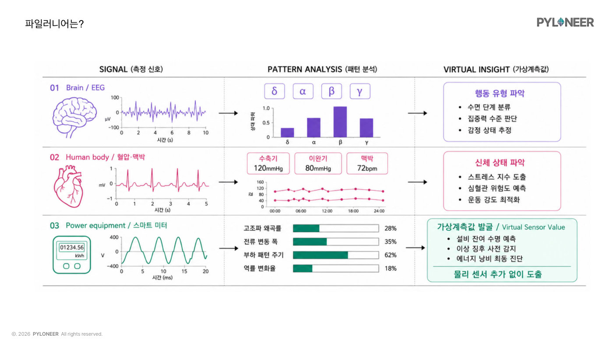

전기차 충전기나 공장 기계가 고장 나면 관제 화면에는 대부분 '통신 장애'라고만 뜬다. 운영사, 제조사, 통신사, 시공사 중 누가 고쳐야 할지 몰라 일단 사람이 출동하는데, 한 번 나가는 데 10~20만 원이 든다. 가보면 멀쩡하거나, 다른 회사 일이라며 넘겨서 또 출동하거나, 리셋 버튼만 누르고 오는 일이 반복됐다. 새는 전기도 문제였다. 작년에 지어진 화성의 최신 자동차 공장은 연간 전기요금이 1,200억 원 규모인데, 아무도 일하지 않는 휴일에도 3.5만kW의 전기가 흐르고 그 이유를 공장 스스로도 몰랐다. 배승환 대표는 이렇게 산출물에 아무 도움이 안 되는데 습관적으로 새는 전기에 '무용 전력'이라는 이름을 붙였다.
파일러니어는 뇌파로 사람의 수면 상태를 읽고 심전도로 심장을 진찰하듯, 기계에 흐르는 전력 파형을 분석해 센서를 추가로 달지 않고도 기계의 상태를 진단하는 가상 계측 AI를 만든다. 고장 유형별 판단 근거를 지식그래프(원인과 근거를 그물망처럼 정리한 지도)로 정리하고, 사람 눈에는 겹쳐 보이는 파형을 7차원 공간에서 분류해 정확도 84~98.2%, 계산 시간 0.3초 이내를 달성했다. 이 스마트미터를 서울대 건물에 달았더니 밤새 꺼지지 않는 기기들이 알람으로 잡혔고, 교수들에게 알려주자 곧바로 전기가 12% 절감됐다. 대기 모드 PC를 실제로 재보니 요금에 안 잡히는 무효 전력(일은 안 하고 전선만 오가는 전기, 맥주로 치면 거품)이 유효 전력의 125배나 됐고, 절감 모듈을 붙이면 탄소 배출을 시간당 18.75g에서 1.88g으로 줄일 수 있었다. 이 결과를 들고 직접 KT를 찾아가 라우터와 셋톱박스의 대기 전력을 줄이는 40억 원 프로젝트를 만들어냈다.
한국전기안전공사, 서울대 등이 참여하는 2,000억 규모 컨소시엄에서 200억 원짜리 '전기설비 원격점검' 과제를 수주했고, 화성 자동차 공장에서는 1.5억 원 유료 실증(돈을 받고 하는 기술 검증)이 진행 중이다. 회사 안의 변화도 컸다. 전 직원에게 Claude Code 구독을 지원했지만 처음에는 AI 쓴 걸 숨기고 자기 말투로 다시 쓰느라 시간을 2배로 쓰거나, 구조를 모른 채 AI에 통째로 맡겨 수정이 불가능해지는 시행착오를 겪었다. '회사 생산성'이 아니라 '개인의 성장'을 위해 쓰라고 목표의 틀을 바꾸자 참여율이 크게 올랐고, 규칙이 명확한 연구 행정과 회계 자동화에서는 확실한 성공 사례가 나왔다. 발표는 AI를 도구가 아닌 문화로 만드는 중이라는 말로 마무리됐다.